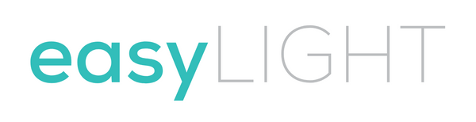

The German squeegee that gives perfectly streak-free glass in seconds, windows, mirrors, shower screens, car glass and more, with no technique needed.
One playbook for the whole team and the client, across every market. Built from the 91-minute founder onboarding call, the full product catalogue, 610+ real social comments (422 customer-voice + 188 competitor/market) and 32 competitor videos, plus competitor and review analysis. Sell the result, not the tool.
Same German-made squeegee system everywhere, but it goes to market under a different name per country. Get this right on every brief, every asset, every line of copy. The brand voice, pillars and angles in this playbook are shared across all markets; only the name, website and language change.
| Market | Company / Brand | Product name | Website | Status |
|---|---|---|---|---|
| 🇩🇪Germany / DACH | easyLIGHT | easyLIGHT | streifenfrei.com |
Launching first |
| 🇦🇺Australia | Eurolux (company, also sells other products) | AquaBlade | eurolux-australia.com.au |
Planned |
| 🇳🇿New Zealand | , | AquaBlade | aquablade.co.nz |
Live site, work TBC |
In Germany the brand and product are easyLIGHT; the website is currently streifenfrei.com. In Australia & New Zealand the product is AquaBlade (Eurolux is the client company). See the Don'ts below for the critical naming rule.
These are non-negotiable for everyone touching copy, design, video or assets. When in doubt, ask before you publish.
Who the brand is and what it stands for, durable, market-agnostic. Everything downstream (angles, hooks, copy) ladders back to these three pillars.
A perfectly streak-free pane in seconds, on every glass surface, that anyone in the house can achieve first try.
The dreaded chore finally feels easy, even satisfying. "I'm excited to clean a window."
Three different axes, outcome · ease · trust, which map to the customer's three buying questions: Will it work? Is it easy? Can I trust it? Each pillar is an umbrella; the creative angles ladder underneath it.
Does it deliver a perfect result? Streak-free, drip-free, on every surface, every time. "streifenfrei" is the German word for the result they can't get, and our web address. Own it.
How easy is it to get that result? No skill, no special angle, no battery, no faff. The sidebars do the technique for you, anyone gets it right first try.
Can you trust it? The patented, genuine German one, built to last, not a cheap copy that drips, streaks and dies within a year.
Tone is a real part of the brand: the calm, sincere, frank delivery the audience responds to ("This is how ads should be: informative, instructional, calm and polite."). Note: these describe how the brand sounds, not the product itself. A squeegee isn't "happy" or "frank"; the way we talk about it is.
Warm, light, never too serious, "we create happiness… not too serious, we can laugh about ourself." The brand doesn't take itself too seriously.
Trustworthy through bluntness, "very German frankness." Honest claims, no hype, no overselling.
"I'm selling them a clean window." Lead with the outcome, not the spec sheet. Non-pushy: "I hold back."
Unhurried, sincere, slightly-strict presenter energy. The tone itself is the proof; let the demo breathe.
Anti-tech, back-to-simple. "Why overcomplicate something with such a simple effective solution?"
Real, unsolicited customer language from the brand's AU/NZ channels and the DE market. Two jobs here: reuse the praise & phrasing in hooks and captions, and build copy that answers the objections, price, "just a normal squeegee", scam fear, head-on. Every pain below is a message waiting to be written. The FAQ at the foot of this playbook holds the substantive answers.
Colours, type and imagery direction, taken from the live streifenfrei.com theme.
Archivo, Headings
Bold, tight, confident. Weights 400 / 600 / 700.
Questrial, Body copy
Clean, calm, highly legible. The unhurried, frank tone in type form.
Demo-led: real hands cleaning real glass; close-ups of the soap-disappearing, corner and blade-bend moments. Bright, clean, domestic settings. The frank, real, unhurried feel is the brand's signature, but test what performs.
easyLIGHT wordmark (teal), the German brand. Website: streifenfrei.com.
Five evidence-grounded, targetable personas for the DACH launch. Core demographic per founder: 40–60+ (down to ~30 edge), gender-neutral, owner or renter (DE has high renters, same job-to-be-done). Pros are not a target.
⚠ DE voice is currently inferred, most genuine customer comments are AU/NZ (DE TikTok was login-gated). Re-mine German voice once the campaign runs.
Wants a flawless home and takes pride in it. The result matters most, a perfect, drip-free pane.
Time-poor, wants it fast and foolproof, "so easy the kids do it." Quick spot-cleans of fingerprints & mirror splatter.
"It's just a normal squeegee." Needs proof of the mechanism, the genuine original, and value for money.
Wants to keep doing it themselves, no ladder, no strength, no tech to learn. Targetable by age.
Caravans, boats, cars, the curved windscreen interior nobody else can reach. Targetable by interest.
What the audience actually feels, ranked by how loudly & often they say it. The top three are the emotional core, lead there.
A brand pillar is the durable territory (outcome, ease, trust). An angle is a single testable promise you build one ad around. Many angles ladder under one pillar.
Each angle is persona-agnostic: the same angle is dressed differently per audience (see the Matrix). Angle names are kept short so they drop straight into the ad naming convention.
Perfectly streak-free glass in one pass, no Schlieren left behind, every time.
Water stays in the tank, nothing runs down the blade onto your floor, sleeve or sill.
One tool reaches every corner, the very bottom edge and high glass, and cleans every surface: windows, mirrors, shower screens, curved car glass, balcony glass.
No special angle, no skill, no pressure, the sidebars do the work, so anyone gets a streak-free finish.
No motor, no battery, no charging, no noise, no tank to empty, nothing to break, nothing to bin next year.
Buy once, a reversible, replaceable blade (~4–6 years per side) and a 5-year guarantee mean a tiny cost per year, not a gadget you re-buy.
Patented side pressure plates pull water out the sides, so no side streaks. It's how you spot the genuine German original: copies legally can't have the sidebars.
We don't fight one named brand; we beat five product categories people already reach for. Always compare on feature/category only, never by name.
Can't bend to finish the bottom edge · battery/charging anxiety · motor noise · a dirty tank to empty · breaks · e-waste.
No battery, never dies mid-job, no tank, and it finishes the bottom edge a motor can't reach.
Leaves four uncleaned corners ("the round can't get into the corner", their own reviewers admit it) · only big flat panes · slow, needs power.
"A circle can't clean a square." Corner-to-corner, plus every small/odd glass a robot can't touch.
Need the "S-Technik" amateurs can't learn · drip · no sidebars → side streaks. (Pros won't switch, don't fight them; target the frustrated amateur.)
No technique needed, the patented sidebars do it for you. No side streaks, no drips.
Vinegar / Spiritus / Klarspüler folklore that mostly still streaks · microfibre "scratches/dulls glass" · sun panic.
"Streifenfrei, every time, no magic recipe." Own the exact word that's their #1 wish.
Cheap Amazon look-alikes ride on our viral footage · identical in a thumbnail · drip, streak and die within a year.
Legally can't have the patented sidebars, so a copy physically can't deliver the no-side-streak result. Be the unmistakable genuine German original.
Demonstrated, view-validated moments to build creative on, these are proven to stop the scroll. Use them as the opening 2 seconds.
Close-up: soap & water sucked out the side by the sidebars. The founder's "could go viral" moment, the visible proof of the patented mechanism.
Top-left corner close-up move (Home Show TikTok). So good scammers copied this exact 2-second clip.
Bending the blade to push water off the very bottom edge of the glass, the thing a vac or stiff squeegee physically can't do.
"One square metre in seven seconds, as fast or faster than a pro squeegee." Counters the "looks slow" comment.
The engine for creative diversity. Every persona × angle cell has a ready-to-shoot hook, that's how one product spawns dozens of distinct ads. Lead (highlighted) = the angle's strongest audience, build here first; support = a strong secondary beat. Working English drafts, translate to German downstream.
| Angle ↓ · Persona → | House Proud | Busy Parent | Sceptic | Older Independent | Vehicle Owner |
|---|---|---|---|---|---|
| StreakFree | Lead"Still seeing smears after all that scrubbing?" One pull, zero streaks, every pane. | Lead"No spray, no vinegar, no streaks." One pull and the window's done before the kids smudge it again. | Support"Watch the soap get pulled out the side. That's the bit that leaves the glass streak-free." | Support"Clear, streak-free windows with no scrubbing and no doing them twice." | Support"Sun hits the windscreen and you see every smear? Not after this. Streak-free on car glass too." |
| NoDrips | Lead"Clean the big upstairs windows without a single drop on your floor, your sill or your sleeve." | Support"No puddle to mop up after. The water stays in the squeegee, not on your floor." | Support"Held it overhead, upside down, and not one drip. The tank holds every drop." | Support"No water down your arm, no wet floor to slip on. Stays clean and dry." | Support"Wipe the inside windscreen with nothing dripping onto your dash or seats." |
| EveryGlass | Lead"One tool for every glass in the house, right down to the bottom edge a normal squeegee always leaves wet." | Support"Mirror, shower screen, glass door, windows. One tool, whole house, done before the school run." | Support"It bends to clear the very bottom edge. The one spot every other squeegee misses." | Lead"Reach the high windows from the ground. No ladder, no wobble, no risk." | Lead"Struggle to get the inside of your windscreen clean and streak-free? The blade follows the curve a flat squeegee can't." |
| NoTechnique | Support"No special angle, no S-motion, no skill. Just pull, and it's perfect first time." | Lead"It's so easy the kids actually do the windows now. No skill, no technique, just pull." | Support"Forget learning the pro technique. The sidebars do the work, you just pull." | Lead"No strength, no special wrist movement, nothing to learn. If you can wipe a table, you can do this." | Support"No awkward angles on the curved glass. It just glides and finishes streak-free." |
| NoGadget | Support"Nothing to charge, no motor to break, no tank to empty. Pick it up and clean." | Support"Nothing to charge and nothing that dies halfway through. Always ready when you've got five minutes." | Lead"No battery, no motor, no tank. Nothing to break and bin next year. Just a blade that works." | Lead"No buttons, no charging, no manual. Pick it up and go." | Support"No charging before you detail the car. Grab it and go, every time." |
| Lasts | Support"Buy it once. The blade flips and lasts years a side. The last window squeegee you'll buy." | Support"About 50 euros once, not 15 every year on cheap squeegees that streak and snap." | Lead"Around 50 euros for a squeegee? The blade flips and lasts years a side, with a 5-year guarantee. That's a few euros a year, not the 15 you keep spending on cheap ones." | Support"Reversible, replaceable blade and a 5-year guarantee. Buy it once and you're sorted." | Support"Takes daily use and keeps going. Built for the garage, not the bin." |
| Patented | Support"The patented sidebars pull water out the sides. That's the secret to no streaks, and only the genuine one has them." | Support"The real German original, patented and guaranteed. Not a cheap copy that streaks." | Lead"See those side bars? Patented. Copies legally can't have them, which is exactly why the cheap ones still streak." | Support"The genuine German original, patented and guaranteed. Not a look-alike that falls apart." | Support"The patented German tool, built to last on the car, the boat and the caravan." |
Real monthly search volumes from Google (Germany), with English so the team knows each term. This sizes the problem and the category we're competing in. Note the seasonal peak: searches roughly triple in March (spring cleaning). The top block is our territory (the problem and the intent); the lower block is the substitute demand we're up against.
| German keyword | English | Searches / mo (DE) | What it tells us |
|---|---|---|---|
| Fenster putzen | cleaning windows (the chore) | 22,200 | The core job. Peaks ~60,500 in March. |
| Schlieren | streaks / smears (the pain) | 5,400 | Low competition. Name the problem with this. |
| Fenster putzen ohne Streifen | cleaning windows without streaks | 3,600 | The exact intent we answer. High value. |
| Hausmittel Fenster putzen | window-cleaning home remedies | 320 | The folk-recipe competitor we counter. |
| streifenfrei | streak-free (our word) | 210 | Low volume but low competition. Ours to own. |
| Fensterputzroboter | window-cleaning robot | 60,500 | Substitute Huge, peaks 110,000. Aspirational rival. |
| Fenstersauger | electric window vac | 8,100 | Substitute Primary rival. Negative kw + "unlike a vac". |
| Fensterwischer | window squeegee / wiper | 2,900 | Category The term for what we are. |
Source: Google Ads average monthly searches, Germany, pulled 17/06/2026. Near-zero terms omitted (e.g. "Fensternasssauger" ~10/mo). The phrasing customers actually use sits in the Voice of Customer section above; this section is about validated search size.
Surfaces confirmed by the founder, the PDPs and customer comments. Stay within this list in copy.
⚠ Pending client confirmation, do NOT claim yet: tiles, solar panels. (The founder didn't mention them on the call, but the rotation-joint PDP claims "ideal for solar panels", conflict to resolve. On the sign-off email.)
The facts behind the product, the answers customers ask for and the objections they raise. Use these to brief creative and write objection-handling copy. A living section: add to it as we learn more.
The blade lasts ~4–6 years per side and is reversible & replaceable, so ~8–10 years of product life. Backed by a 5-year manufacturer guarantee. (Owners report a decade of use.)
Windows, mirrors, shower screens, glass splashbacks, car glass (incl. the curved inside windscreen), balcony/balustrade glass, sliding doors, pool fences, boats/caravans and glass cooktops. Tiles & solar panels, pending client confirmation.
Yes, the side pressure plates (sidebars) are patented. They pull water out the sides so no streak escapes the edges, and copies legally can't replicate them. It's how you spot the genuine original.
A normal squeegee has no sidebars, so water escapes the sides and leaves streaks; it can't reach the bottom edge, and it drips. This one stops side streaks, bends to finish the bottom edge, and starts/stops mid-pane without marks.
The founder cleans about 1 square metre in 7 seconds, but he's had years of practice, so treat that as the expert benchmark, not a typical first-timer's speed. It's genuinely fast; until we have timed evidence for a new user, don't state "7 seconds" as a guaranteed result in copy.
Warm water, or pop it in the dishwasher with the handle removed. The high-grade silicone blade doesn't dry out.
Germany, by Göttler GmbH in Bavaria. In DE we lead with "patentiert" over "Made in Germany" (Germans price-shop and respond more to the patent).
Cleaning Set (€35): entry and everyday use, small homes, renters, cars and spot-cleaning. Blade + Telescopic (€40–50): high or hard-to-reach windows, multi-storey homes, balconies. Full Set (€70): whole-home, house-proud, the complete kit. A premium bundle (~€85–90) is in development. No confirmed hero SKU yet, to be tested; treat the Full Set as the working hero until data says otherwise.
It's a two-step job. First you wash the window to lift the dirt (water and detergent, plus however much scrubbing the grime needs; the pre-washer helps here). Then the squeegee clears that water and loosened dirt away in one streak-free pass. So it's the finishing tool, not a dirt-dissolver. (Client side-note: a genuinely dirty-window demo would show this off far better than clean glass; raised on the sign-off email.)
"5 Jahre Herstellergarantie. Ihre gesetzlichen Gewährleistungsrechte (2 Jahre) bleiben unberührt."
EN: 5-year manufacturer guarantee; your statutory 2-year warranty rights remain unaffected. Always pair this disclaimer with any guarantee claim.